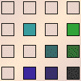
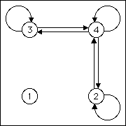
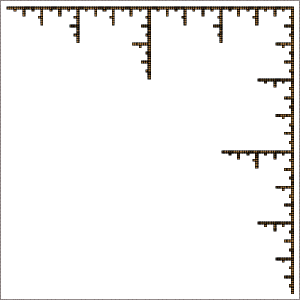

| What about the vertical line determined by T2 and T4, and
the horizontal line determined by T3 and T4? Are these
lines additive? |
|  |
 |
 |
|
 |
|
| They are not, and the reason is clear: both lines share the transformation
T4. |
| The part of the vertical line in the square with address 4 is scaled and copied
to the square with address 34, and then to the cascade of smaller squares with longer
addresses 334, 434, 3334, 4334, 3434, 4434, and so on. |
| Similarly, the part of the horizonal line in the square with address 4 is scaled and copied
to the square with address 24, and then to the cascade of smaller squares with longer
addresses 224, 424, 2224, 4224, 2424, 4424, and so on. |
|